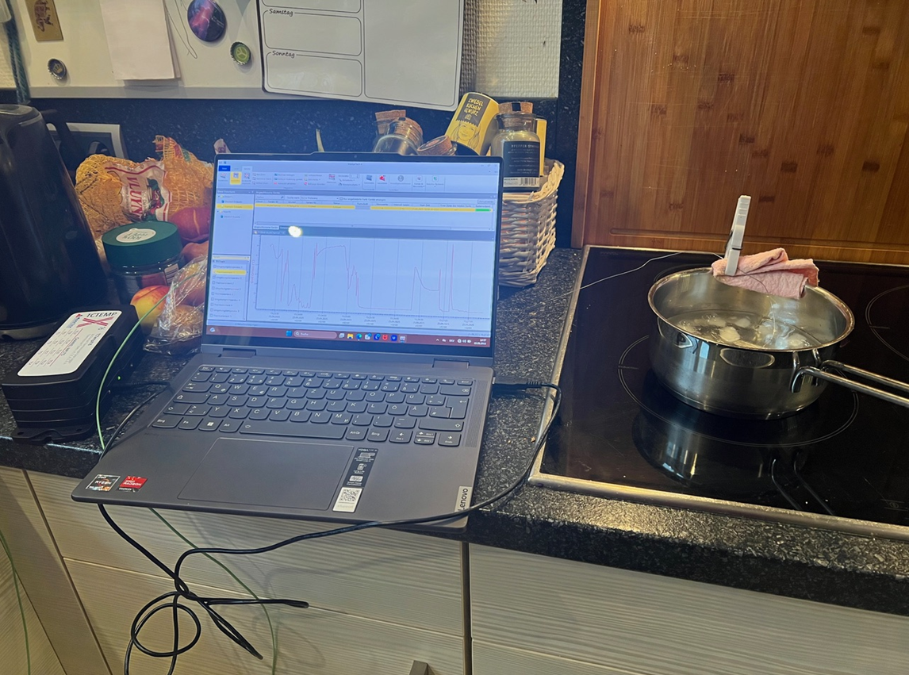
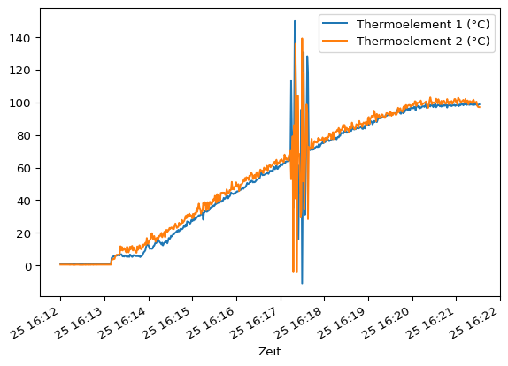
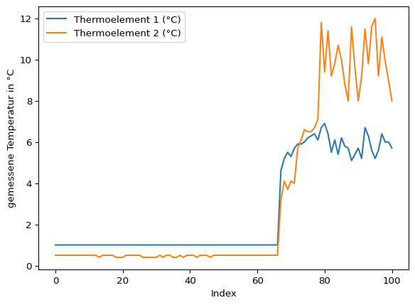
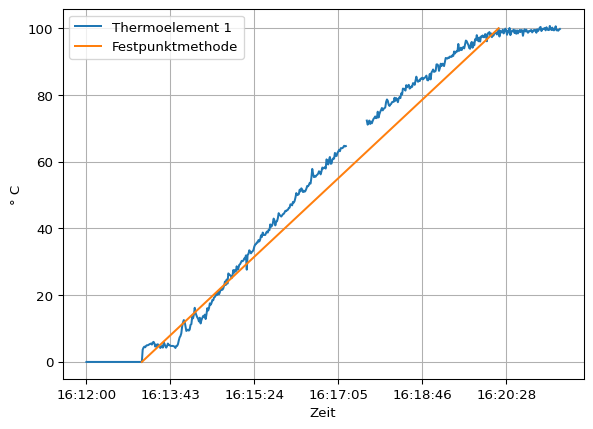
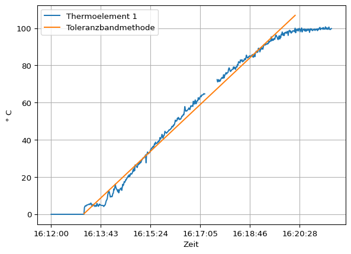

In diesem Kapitel werden die praktischen Herausforderungen bei der Auswertung von Messdaten demonstriert.
55.1 Versuchsaufbau

Versuchsaufbau Eis kochen
In einem thermodynamischen Feldlabor wurde ein induktives Heizelement benutzt, um Eiswasser in einem metallischen Flüssigkeitsbehälter mit hoher Wärmeleitfähigkeit zum Sieden zu bringen. Mit einer nichtleitenden Halterung wurden zwei Thermoelemente eines Widerstandsthermometers fixiert. Ein TCTempX16 zeichnete die Daten auf, die mit einem Gerät zur automatisierten Datenverarbeitung ausgelesen wurden.
55.2 Datei einlesen
Die Messreihe ist in der Datei ‘01-daten/Eis_Messung_1.xlsx’ im Tabellenblatt ‘T15949 MultiChannel - Daten’ gespeichert.
eis = pd.read_excel(io ='01-daten/Eis_Messung_1.xlsx', sheet_name ='T15949 MultiChannel - Daten')print(eis.head(n =10))
Gerätename: Unnamed: 1 \
0 Gerätebeschreibung: NaN
1 Serien-Nummer: NaN
2 Geräte-ID: NaN
3 NaN NaN
4 NaN NaN
5 Datum Zeit
6 2025-09-25 16:12:00 2025-09-25 16:12:00
7 2025-09-25 16:12:01 2025-09-25 16:12:01
8 2025-09-25 16:12:02 2025-09-25 16:12:02
9 2025-09-25 16:12:03 2025-09-25 16:12:03
TCTempX16 \
0 16-Kanal Thermoelement Temperatur-Datenlogger
1 T15949
2 MultiChannel
3 NaN
4 Kanal 2
5 Thermoelement 1 (°C)
6 1
7 1
8 1
9 1
TCTempX16.1
0 16-Kanal Thermoelement Temperatur-Datenlogger
1 T15949
2 MultiChannel
3 NaN
4 Kanal 4
5 Thermoelement 2 (°C)
6 0.5
7 0.5
8 0.5
9 0.5
Das Einlesen und Bereinigen der Daten finden Sie in dem folgenden Beispiel.
Note 55.1: Datensatz einlesen & bereinigen
Im Kopf des Tabellenblatts stehen Metadaten der Messung. Es gibt vier Spalten mit Daten: Datum und Zeit sowie die Messreihen der beiden Thermoelemente.
Die Daten wurden korrekt eingelesen. Mit der Methode pd.describe() wird der Wertebereich der Spalten überprüft, um numerisch kodierte fehlende oder fehlerhafte Werte zu identifizieren.
print(eis.describe())
Datum Zeit \
count 565 565
mean 2025-09-25 16:16:47.024778752 2025-09-25 16:16:47.024778752
min 2025-09-25 16:12:00 2025-09-25 16:12:00
25% 2025-09-25 16:14:25 2025-09-25 16:14:25
50% 2025-09-25 16:16:47 2025-09-25 16:16:47
75% 2025-09-25 16:19:09 2025-09-25 16:19:09
max 2025-09-25 16:21:32 2025-09-25 16:21:32
std NaN NaN
Thermoelement 1 (°C) Thermoelement 2 (°C)
count 565.000000 565.000000
mean 53.581239 55.451858
min -11.000000 -4.100000
25% 14.900000 20.300000
50% 56.200000 58.300000
75% 90.300000 91.200000
max 149.800000 139.200000
std 36.886184 36.542679
Die Spalten Datum und Zeit enthalten die selben Informationen. Eine der beiden Spalten kann deshalb entfernt werden. Die Temperaturmessungen sollten näher betrachtet werden. Eishaltiges Wasser, das zum Kochen gebracht wird, sollte sich in einem Temperaturbereich von 0 bis 100 °C bewegen.
eis.drop(labels ='Datum', axis =1, inplace =True)
Wir stellen den Datensatz grafisch dar.
eis.plot(x ='Zeit', y = ['Thermoelement 1 (°C)', 'Thermoelement 2 (°C)'])

Etwa in der Mitte des Datensatzes verzeichnen beide Sensoren extreme Fehlwerte. Diese sollen entfernt werden.
In einem bestimmten Abschnitt scheinen keine gültigen Werte vorzuliegen und diese sollen als ungültig markiert werden. Dazu betrachten wir zunächst die typische Veränderung der Messwerte, also die Differenz jedes Werts zu seinem Vorgänger mit der Methode pd.Series.diff(). Ebenfalls wird die Veränderung in studentisierten z-Werten ausgedrückt.
Die z-Werte werden mit der scipy-Funktion scipy.stats.zscore(a, ddof = 1, nan_policy = 'omit')) ermittelt. a steht für array-artige Daten, ddof = 1 spezifiziert die Stichprobenstandardabweichung und das Argument nan_policy = 'omit' wird verwendet, um mit dem Wert np.nan an der ersten Stelle arbeiten zu können, der aus der Berechnung der Veränderung entsteht, da für den ersten Wert einer Reihe kein gültiger Wert berechnet werden kann.
Warning 55.1: np.diff() und pd.diff()
NumPy und Pandas verfügen über eine Funktion diff. Diese verhalten sich standardmäßig unterschiedlich. Um die Länge einer Datenreihe mit np.diff() zu erhalten, können die Parameter prepend oder append verwendet werden, um der Datenreihe vor Ausführung der Operation einen Wert voranzustellen oder einen Wert anzuhängen. So bleiben die Länge der Datenreihe und die Indexpositionen der Werte erhalten.
Die Position der ungültigen Werte kann sowohl über eine sinnvolle Schwelle der (absoluten) Temperaturveränderung oder der absoluten z-Werte bestimmt werden. In diesem Fall verwenden wir die absolute Temperaturveränderung und wählen den Schwellwert 10. Es wird die Position des ersten und des letzten Werts, der oberhalb dieses Schwellwerts liegt, bestimmt.
# absolute Änderung bestimmendiff_thermoelement1 = eis['Thermoelement 1 (°C)'].diff().abs()diff_thermoelement2 = eis['Thermoelement 2 (°C)'].diff().abs()# Schwellwert festlegen und prüfenschwellwert =10bool_series_thermoelement1 = diff_thermoelement1 > schwellwertbool_series_thermoelement2 = diff_thermoelement2 > schwellwert# ersten und letzten Wert größer Schwellwert finden## Thermoelement 1### Wo steht nicht False?### np.nonzero() gibt ein Tupel zurück### Dieses enthält für jede Dimension ein array der Indexwertepositionen_thermoelement1 = np.nonzero(bool_series_thermoelement1)## Thermoelement 2### Wo steht nicht False?### np.nonzero() gibt ein Tupel zurück### Dieses enthält für jede Dimension ein array der Indexwertepositionen_thermoelement2 = np.nonzero(bool_series_thermoelement2)# Ausgabe## Thermoelement 1print("Thermoelement 1")print(51*"=")print("Anzahl der Temperaturänderungen mit Betrag > 10:", bool_series_thermoelement1.sum())print(f"Die Position des ersten Werts: {positionen_thermoelement1[0][0]}")print(f"Die Position des letzten Werts: {positionen_thermoelement1[0][-1]}")## Thermoelement 2print("\nThermoelement 2")print(51*"=")print("Anzahl der Temperaturänderungen mit Betrag > 10:", bool_series_thermoelement2.sum())print(f"Die Position des ersten Werts: {positionen_thermoelement2[0][0]}")print(f"Die Position des letzten Werts: {positionen_thermoelement2[0][-1]}")
Thermoelement 1
===================================================
Anzahl der Temperaturänderungen mit Betrag > 10: 20
Die Position des ersten Werts: 310
Die Position des letzten Werts: 333
Thermoelement 2
===================================================
Anzahl der Temperaturänderungen mit Betrag > 10: 20
Die Position des ersten Werts: 310
Die Position des letzten Werts: 333
Für beide Thermoelemente kann der gleiche Bereich als ungültig markiert werden. Vor der weiteren Bearbeitung wird eine Kopie des aufgeräumten Datensatzes erstellt.
von = positionen_thermoelement1[0][0]bis = positionen_thermoelement1[0][-1]eis.loc[von : bis, ['Thermoelement 1 (°C)', 'Thermoelement 2 (°C)']] = np.nan# Kopie von eis anlegeneis_backup = eis.copy()
55.3 Daten darstellen
Der Datensatz wird dargestellt. (In der Darstellung mit pd.plot() ist die automatisch gewählte x-Achsenbeschriftung unansehnlich. Deshalb wird ein Datenobjekt für die Darstellung angelegt und die Spalte ‘Zeit’ auf die Uhrzeit reduziert.)
Für die Korrektur des Nullpunkt- und des Empfindlichkeitsfehlers sind als Referenzpunkte die Temperaturen 0 und 100 Grad Celsius bekannt: Solange Eis im Wasser schwimmt, hat es 0 °C, und bei 100 °C erreicht das Wasser seinen Siedepunkt.
Warning 55.2: Siedetemperatur von Wasser
Die Siedetemperatur von Wasser ist abhängig vom Luftdruck und beträgt 100 °C bei 1013,25 hPa. In Deutschland liegt die tatsächliche Siedetemperatur typischerweise etwas niedriger.
55.4.1 0 °C
Für die wahre Temperatur 0 °C sind viele Messpunkte verfügbar. Schauen wir uns die ersten 100 Messwerte an:
eis.loc[0 : 100, ['Thermoelement 1 (°C)', 'Thermoelement 2 (°C)']].plot(xlabel ='Index', ylabel ='gemessene Temperatur in °C')

Der Zeitpunkt, ab dem die Wärmezufuhr beginnt, kann z. B. mit der Methode pd.diff() ermittelt werden:
Da das Thermoelement 1 leichte Messabweichungen aufweist, wird ein Schwellwert etwas größer als 0 gewählt. Damit wird die Position des ersten Werts bestimmt, der oberhalb des Schwellwerts liegt.
# absolute Änderung bestimmendiff_thermoelement1 = eis.loc[0 : 100, 'Thermoelement 1 (°C)'].diff().abs()diff_thermoelement2 = eis.loc[0 : 100, 'Thermoelement 2 (°C)'].diff().abs()# Schwellwert festlegen und prüfenschwellwert =0.2bool_series_thermoelement1 = diff_thermoelement1 > schwellwertbool_series_thermoelement2 = diff_thermoelement2 > schwellwert# ersten Wert größer Schwellwert finden## Thermoelement 1### Wo steht nicht False?### np.nonzero() gibt ein Tupel zurück### Dieses enthält für jede Dimension ein array der Indexwertepositionen_thermoelement1 = np.nonzero(bool_series_thermoelement1)## Thermoelement 2### Wo steht nicht False?### np.nonzero() gibt ein Tupel zurück### Dieses enthält für jede Dimension ein array der Indexwertepositionen_thermoelement2 = np.nonzero(bool_series_thermoelement2)# Ausgabe## Thermoelement 1print("Thermoelement 1")print(f"Die Position des ersten Werts: {positionen_thermoelement1[0][0]}")## Thermoelement 2print("\nThermoelement 2")print(f"Die Position des ersten Werts: {positionen_thermoelement2[0][0]}")
Thermoelement 1
Die Position des ersten Werts: 67
Thermoelement 2
Die Position des ersten Werts: 67
Die Wärmezufuhr beginnt also bei dem Wert an Indexposition 67. Der Nullpunkt der Messreihe liegt somit an der Indexposition 67 - 1.
start_wärmezufuhr =67start = start_wärmezufuhr -1
55.5 Nullpunktfehler korrigieren
Somit kann der Nullpunktfehler nun für beide Thermoelemente aus der Differenz zwischen dem Mittelwert der gemessenen Werte bis exklusiv Indexposition 67 und dem wahren Wert 0 direkt berechnet werden. Diese Position haben wir in der Variable start gespeichert, die für beide Thermoelemente gilt.
Auch für die wahre Temperatur 100 Grad sind viele Messpunkte verfügbar. Wir wollen die letzten 120 Messwerte betrachten. Der Punkt, an dem das Wasser siedet, ist jedoch nicht so einfach zu bestimmen. Starke Messabweichungen erzeugen ein verrauschtes Bild. Um die grafische Analyse zu erleichtern wurden für beide Messreihen der gleitende Durchschnitt sowie der Mittelwert der geglätten Messreihen eingezeichnet. Diese Methoden werden Methoden im Methodenbaustein Datenfitting und Datenoptimierung vermittelt.
Behelfsweise bestimmen wir den Referenzpunkt für 100 °C, indem die Werte zwischen dem Indexwert 500 und bis zu den letzten 10 Werten des Datensatzes gemittelt werden. Anschließend wird der Index bestimmt, an dem die Messwerte diesen Mittelwert erstmalig erreichen. (Hinweis: Die Daten wurden bereits um den ermittelten Nullpunktfehler korrigiert.)
thermoelement1_max = eis['Thermoelement 1 (°C)'].iloc[500 : -10].mean()thermoelement2_max = eis['Thermoelement 2 (°C)'].iloc[500 : -10].mean()# ge = greater or equal, idxmax = find first occurrence of maximum value (0 and 1)ende_thermoelement1 = eis['Thermoelement 1 (°C)'].ge(thermoelement1_max).idxmax()ende_thermoelement2 = eis['Thermoelement 2 (°C)'].ge(thermoelement2_max).idxmax()print(f"Gemitteltes Maximum Thermoelement 1: {thermoelement1_max:.2f} °C",f"Erstmalig erreicht an Position: {ende_thermoelement1 }", sep ="\n")print(f"Gemitteltes Maximum Thermoelement 2: {thermoelement2_max:.2f} °C",f"Erstmalig erreicht an Position: {ende_thermoelement2 }", sep ="\n")
Gemitteltes Maximum Thermoelement 1: 97.32 °C
Erstmalig erreicht an Position: 491
Gemitteltes Maximum Thermoelement 2: 99.93 °C
Erstmalig erreicht an Position: 476
55.6 Empfindlichkeitsfehler korrigieren
Mit den bekannten Start- und Endwerten kann der Empfindlichkeitsfehler geschätzt werden. Als Referenzpunkte sind bekannt:
Die Indexposition, an der die Wärmezufuhr beginnt und die in der Variable ‘start_wärmezufuhr’ gespeichert ist. An der Indexposition start_wärmezufuhr - 1 beträgt die wahre Temperatur 0 °C. Der Index dieses Werts ist in der Variable ‘start’ gespeichert (und ist für beide Thermoelemente identisch).
Die Indexposition, an der die Temperatur ihr Maximum erreicht. Solange Wasser im Topf ist, beträgt die wahre Temperatur 100 °C. Die Position dieses Werts konnte nur geschätzt werden und ist in den Variablen ‘ende_thermoelement1’ und ‘ende_thermoelement1’ gespeichert.
Die Daten wurden mit einem linearen Verfahren kalibriert, obwohl die Messwerte nichtlinear sind. Der Linearitätsfehler soll quantifiziert werden.
55.7.0.1 Festpunktmethode
Thermoelement 1
ende = ende_thermoelement1# Endpunktverbindende Gerade schätzen# x muss bei Null beginnenlm = poly.polyfit( x = [start - start, ende - start], y = [eis.loc[start, 'Thermoelement 1 (°C)'], eis.loc[ende, 'Thermoelement 1 (°C)']], deg =1)## print(lm.round(2)) # intercept + slope# Vorhersagewerte schätzen## np.arange() ist exklusivvorhersagewerte = poly.polyval(x = np.arange(start - start, ende - start +1), c = lm)### print(len(vorhersagewerte))### print(len(np.arange(eis.loc[start:ende, :].shape[0])))# Linearitätsfehler berechnenlinearitätsfehler_festpunkt = eis.loc[start:ende, 'Thermoelement 1 (°C)'].sub(vorhersagewerte).abs().max()print(f"Linearitätsfehler nach Festpunktmethode: {linearitätsfehler_festpunkt:.2f} °C.")# grafische Darstellungplt.plot(np.arange(eis.shape[0]), eis['Thermoelement 1 (°C)'], label ='Thermoelement 1')plt.plot(np.arange(start, ende +1), vorhersagewerte, label ='Festpunktmethode')# Position und Beschriftung der x-Achse setzenplt.xticks(ticks = np.arange(0, eis.shape[0], 100), labels = eis['Zeit'].dt.time[::100]) plt.xlabel(xlabel ='Zeit')plt.ylabel(ylabel ='° C')plt.grid()plt.legend()plt.show()
Linearitätsfehler nach Festpunktmethode: 10.09 °C.

Thermoelement 2
ende = ende_thermoelement2# Endpunktverbindende Gerade schätzen# x muss bei Null beginnenlm = poly.polyfit( x = [start - start, ende - start], y = [eis.loc[start, 'Thermoelement 2 (°C)'], eis.loc[ende, 'Thermoelement 2 (°C)']], deg =1)## print(lm.round(2)) # intercept + slope# Vorhersagewerte schätzen## np.arange() ist exklusivvorhersagewerte = poly.polyval(x = np.arange(start - start, ende - start +1), c = lm)### print(len(vorhersagewerte))### print(len(np.arange(eis.loc[start:ende, :].shape[0])))# Linearitätsfehler berechnenlinearitätsfehler_festpunkt = eis.loc[start:ende, 'Thermoelement 2 (°C)'].sub(vorhersagewerte).abs().max()print(f"Linearitätsfehler nach Festpunktmethode: {linearitätsfehler_festpunkt:.2f} °C.")# grafische Darstellungplt.plot(np.arange(eis.shape[0]), eis['Thermoelement 2 (°C)'], label ='Thermoelement 2')plt.plot(np.arange(start, ende +1), vorhersagewerte, label ='Festpunktmethode')# Position und Beschriftung der x-Achse setzenplt.xticks(ticks = np.arange(0, eis.shape[0], 100), labels = eis['Zeit'].dt.time[::100]) plt.xlabel(xlabel ='Zeit')plt.ylabel(ylabel ='° C')plt.grid()plt.legend()plt.show()
Linearitätsfehler nach Festpunktmethode: 10.95 °C.
55.7.0.2 Toleranzbandmethode
Für die Anwendung der Toleranzbandmethode wird die Funktion linregress aus dem Paket SciPy verwendet, da diese mit fehlenden Werten umgehen kann.
linregress(x, y, alternative='two-sided', *, axis=0, nan_policy='propagate')
Dafür wird der Parameter nan_policy = 'omit' gesetzt, wodurch Fehlwerte verworfen werden. Die Funktion gibt ein LinregressResult-Objekt zurück, dass den Zugriff auf die Regressionsobjekte über Attribute erlaubt. Für uns relevant sind die Attribute LinregressResult.intercept und LinregressResult.slope.
Thermoelement 1
ende = ende_thermoelement1# Regression durch die Messwerte# x muss bei Null beginnenlm = scipy.stats.linregress( x = np.arange(start - start, ende - start +1), y = eis.loc[start:ende, 'Thermoelement 1 (°C)'], nan_policy ='omit')# print(lm.intercept, lm.slope)# Vorhersagewerte schätzen## np.arange() ist exklusivvorhersagewerte = poly.polyval(x = np.arange(start - start, ende - start +1), c = [lm.intercept, lm.slope])# Linearitätsfehler berechnenlinearitätsfehler_toleranzband = eis.loc[start:ende, 'Thermoelement 1 (°C)'].sub(vorhersagewerte).abs().max()print(f"Linearitätsfehler nach Toleranzbandmethode: {linearitätsfehler_toleranzband:.2f} °C.")# grafische Darstellungplt.plot(np.arange(eis.shape[0]), eis['Thermoelement 1 (°C)'], label ='Thermoelement 1')plt.plot(np.arange(start, ende +1), vorhersagewerte, label ='Toleranzbandmethode')# Position und Beschriftung der x-Achse setzenplt.xticks(ticks = np.arange(0, eis.shape[0], 100), labels = eis['Zeit'].dt.time[::100]) plt.xlabel(xlabel ='Zeit')plt.ylabel(ylabel ='° C')plt.grid()plt.legend()plt.show()
Linearitätsfehler nach Toleranzbandmethode: 8.22 °C.

Thermoelement 2:
ende = ende_thermoelement2# Regression durch die Messwerte# x muss bei Null beginnenlm = scipy.stats.linregress( x = np.arange(start - start, ende - start +1), y = eis.loc[start:ende, 'Thermoelement 2 (°C)'], nan_policy ='omit')# print(lm.intercept, lm.slope)# Vorhersagewerte schätzen## np.arange() ist exklusivvorhersagewerte = poly.polyval(x = np.arange(start - start, ende - start +1), c = [lm.intercept, lm.slope])# Linearitätsfehler berechnenlinearitätsfehler_toleranzband = eis.loc[start:ende, 'Thermoelement 2 (°C)'].sub(vorhersagewerte).abs().max()print(f"Linearitätsfehler nach Toleranzbandmethode: {linearitätsfehler_toleranzband:.2f} °C.")# grafische Darstellungplt.plot(np.arange(eis.shape[0]), eis['Thermoelement 2 (°C)'], label ='Thermoelement 2')plt.plot(np.arange(start, ende +1), vorhersagewerte, label ='Toleranzbandmethode')# Position und Beschriftung der x-Achse setzenplt.xticks(ticks = np.arange(0, eis.shape[0], 100), labels = eis['Zeit'].dt.time[::100]) plt.xlabel(xlabel ='Zeit')plt.ylabel(ylabel ='° C')plt.grid()plt.legend()plt.show()
Linearitätsfehler nach Toleranzbandmethode: 6.78 °C.
55.8 Zweipunktkalibrierung
Für die Zweipunktkalibrierung stellen wir den in Note nte-eis eingelesenen Datensatz wieder her.